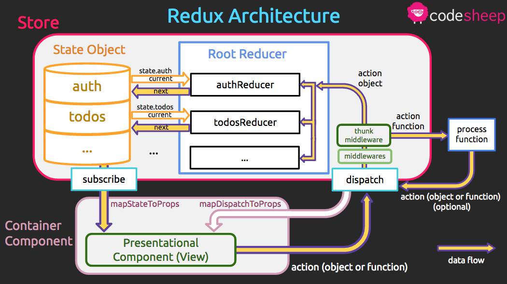

แผนผัง Redux Architecture
Posted January 6, 2017 by Supasate Choochaisriคิดว่าหลายๆคนที่เคยเขียน Redux กันมาบ้าง คงจะคุ้นเคยกับคำว่า Uni-Directional Data Flow ซึ่งได้อิทธิพลมาจาก Flux Architecture แต่ว่าพอไปเริ่มเขียนกันจริงแล้ว ช่วงแรกๆจะเห็นภาพไม่ค่อยชัดว่ามันสัมพันธ์กับแต่ละ component ที่เราเขียนยังไง ในบทความนี้ผมเลยนำแผนผัง Redux Architecture ที่ทำขึ้นมาเพื่อใช้สอนใน Bootcamp ของ CodeSheep มาให้ดูกันนะครับ
หมายเหตุ บทความนี้เหมาะสำหรับคนที่เคยเขียน redux มาก่อนแล้ว แต่ถ้าไม่เคยเขียนมาก่อนก็ไม่ต้องสนใจส่วนที่เป็นโค้ดก็ได้ครับ
Simplified Redux Architecture
เริ่มจากอันแรกเป็นแผนผังให้เห็นภาพรวมแบบง่ายๆ ที่หลายๆที่ก็ทำออกมาคล้ายๆแบบนี้กัน มีจุดที่น่าสนใจดังนี้ครับ
Store
- state และ reducer อยู่ใน store ซึ่งช่วยให้เราจำได้ว่าตอนเราสร้าง store ด้วยคำสั่ง
createStoreเราเลยต้องส่งinitialStateกับrootReducerเป็น parameters เพื่อสร้างก้อน store นี้ขึ้นมานั่นเอง - store จะมีคำสั่ง
dispatchเป็น API ให้เรียกใช้ได้ ถ้าจำกันได้ตอนเราทำmapDispatchToPropsเราจะเรียกคำสั่งdispatchได้ ซึ่งคำสั่งนี้ก็คือตัวเดียวกับstore.dispatchนั่นเอง
Simplified Data Flow
การวิ่งของข้อมูลที่เป็นทิศทางเดียว (Uni-directional Data Flow) จะแทนด้วยลูกศรสีเหลืองกรอบม่วง โดยภาพรวมแบบง่ายๆ เป็นดังนี้ครับ
- เริ่มต้นจากกล่อง state วิ่งลงมายัง View หรือ Component ของเรา (เข้ามาเป็น props)
- เมื่อ View ต้องการเปลี่ยนค่าใน store จะเรียก
dispatchเพื่อส่ง action ไปยัง reducer - Reducer เป็นฟังก์ชันที่รับค่า state ปัจจุบัน และ action เข้ามา แล้วคืนค่าออกมาเป็น state ถัดไป
- เมื่อ state เกิดการเปลี่ยนแปลงก็จะส่งค่ากลับลงมาเพื่ออัพเดท View ผ่านทาง props
สังเกตว่าในภาพ state เป็นกล่องเดียว แต่จริงๆทุกครั้งที่ state เปลี่ยนจะเกิดกล่องใหม่ของส่วนที่เปลี่ยนแปลงขึ้นมา โดยเราจะไม่ไปแก้ไขค่าในกล่อง state เดิม (ตามหลักการของ pure function ที่จะไม่ก่อให้เกิด side effect)
พอเห็นภาพรวมง่ายๆแบบนี้แล้ว เดี๋ยวเราลองไปดูแบบเต็มๆกันครับ
(Almost Complete) Redux Architecture

จะเห็นว่าพอเรามาเขียนโค้ดจริงๆมันมีหลายละเอียดปลีกย่อยเพิ่มมามาก ที่ใส่คำว่า almost complete คือจริงๆมันยังมีรายละเอียดมากกว่านี้ที่เรามองไม่เห็นและไม่ได้ใช้โดยตรง แผนภาพนี้เลยเน้นเฉพาะที่เกี่ยวข้องตอนเราใช้กันจริงๆครับ
Store
- State object ของเรามีลักษณะเป็น key-value ทั่วไป แต่ละ key (เช่น auth, todos ในภาพ) ก็จะมี reducer ที่รับผิดชอบอยู่
- Root Reducer คือที่เราสร้างจากฟังก์ชัน
combineReducersนั่นเอง ก็จะประกอบด้วย reducer แต่ละตัวที่รับผิดชอบแต่ละ sub-state ตาม key ของ state object
const rootReducer = combineReducers({
auth: authReducer,
todos: todoReducer,
})
- Middlewares ก็จะมีหลายตัว โดยภาพในตัวอย่างเราอาจมี middleware ตัวอื่นๆ ก่อนที่จะไปถึง redux-thunk middleware เป็นต้น
- จากข้อ 1 - 3 จะเห็นภาพชัดขึ้นว่าฟังก์ชัน
createStoreที่ได้พูดไปแล้วมันต้องประกอบด้วยอะไรบ้างถึงได้เป็น store ขึ้นมา ก็คือinitialState,rootReducer, และapplyMiddlewareที่เราใช้กันนั่นเอง
const store = createStore(
initialState,
rootReducer,
applyMiddleware(
thunk,
otherMiddleware,
)
)
- นอกจากฟังก์ชัน
dispatchแล้ว store ยังมี API อื่นๆอีก ตัวที่ใช้กันโดยไม่รู้ตัวก็คือstore.subscribeที่จะคอยเรียก callback ให้ถ้า state มีการเปลี่ยนแปลง ซึ่งตัวที่แอบทำการ subscribe ให้เราก็คือฟังก์ชันconnectนั่นเอง โดยมันจะไป subscribe store ที่อยู่ใน context (อันนี้ขอไม่ลงรายละเอียดเรื่อง context ให้นึกว่ามันคล้ายๆ global object ที่ทำให้ส่งค่าต่างๆไปยังทุก component ได้โดยไม่ต้องส่งผ่าน props) ที่ component ชื่อProviderเป็นคนจัดเตรียมไว้ให้ นั่นเป็นเหตุผลว่าทำไมเราต้องมีProviderครอบโค้ดของเราและรับ store เป็น props เข้าไป
<Provider store={store}>
...
</Provider>
Data Flow
ลองมาดูการวิ่งของข้อมูลแบบเต็มๆ กัน ขอแปะภาพเดิมซ้ำอีกที่จะได้ไม่ต้องเลื่อนขึ้นไปดูนะครับ
- เริ่มต้นจากกล่อง state โดยตอนเริ่มต้น container component ที่ครอบ presentational component ของเรา (ที่สร้างจากฟังก์ชัน
connect) จะดึงค่า state และคำสั่ง dispatch จาก store มาให้ แล้วโยนต่อไปให้mapStateToPropsและmapDispatchToPropsเพื่อส่งเข้าไปเป็น props ให้เรา
const mapStateToProps = state => ({
auth: state.auth,
todos: state.todos,
})
const mapDispatchToProps = dispatch => ({
fetchTodos: () => dispatch(fetchTodos())
})
export default connect(mapStateToProps, mapDispatchToProps)(TodoList)
- Presentational Component ทำการเรียกฟังก์ชันที่จะทำการ dispatch โดยอาจจะ dispatch เป็น action object หรือเป็น action function (ถ้ามีการใช้ redux-thunk middleware)
- ระหว่างการ dispatch กับ reducer จะมี middleware ทั้งหลายคั่นอยู่ โดยถ้ามีการใช้ redux-thunk ก็จะมีการตรวจสอบว่า action ที่รับเข้ามานั้นเป็น object หรือเป็น function
- ถ้าเป็น function จะทำการประมวลผล function นั้นก่อน ซึ่งในฟังก์ชันนั้นอาจจะมีการ dispatch อย่างอื่นออกมาอีกก็ได้
const fetchTodo = () => dispatch => {
fetch(...)
.then(todos => dispatch(fetchTodosSuccess(todos)))
}
- ถ้าเป็น object ก็จะส่งไปเข้า root reducer ทันที
const fetchTodosSuccess = (todos) => ({
type: FETCH_TODOS_SUCCESS,
payload: todos,
})
- ที่ rootReducer เป็นจุดที่คนเข้าใจผิดกันมากว่า action แต่ละประเภทจะไปเข้าแต่ละ reducer ที่เกี่ยวข้อง แต่จริงๆแล้ว ทุก action จะไปเข้า ทุก reducer ทั้งหมด แล้วแต่ละ reducer ถึงไปเลือกเองว่าถ้าไม่ต้องการก็ return state เดิมที่เป็นอยู่ไม่ต้องทำอะไร (ที่เรามักจะปล่อยผ่านด้วย
defaultในswitch caseนั่นเอง) - แต่ละ reducer ก็จะได้รับ parameter เป็น action object และ sub-state เฉพาะ key ที่มันรับผิดชอบมาเท่านั้น
const todoReducer = (state, action) => { // state ตรงนี้เป็นเพียง state.todos ของ root state tree
...
}
และก็จะ return ค่าเป็น state ถัดไปออกมา
- เมื่อ state เปลี่ยน ก็จะ trigger container component ที่ subscribe store อยู่เพื่อไปอัพเดท props ของ presentation component นั่นเอง
ก็จะจบรอบการทำงาน 1 รอบของ Redux
ทิ้งท้าย
ก็หวังว่าแผนภาพ Redux Architecture นี้จะช่วยให้เห็นภาพรวมการเชื่อมโยงของแต่ละส่วนใน Redux มากขึ้นนะครับ ช่วงแรกๆ ที่ฝึก Redux จะรู้สึกว่ายาก เพราะว่า learning curve ค่อนข้างสูง แต่พอเข้าใจแล้วที่เหลือก็จะเป็น pattern เดิมๆ ซ้ำไปมาตลอดครับ อารมณ์เดียวกับ React เลย แนะนำว่าให้ลองเขียนแอพ TodoMVC ขึ้นมาเล่นโดยไม่ดูเฉลยซัก 3 รอบก็จะทำให้เข้าใจการทำงานของ redux แน่นขึ้นมากล่ะครับ